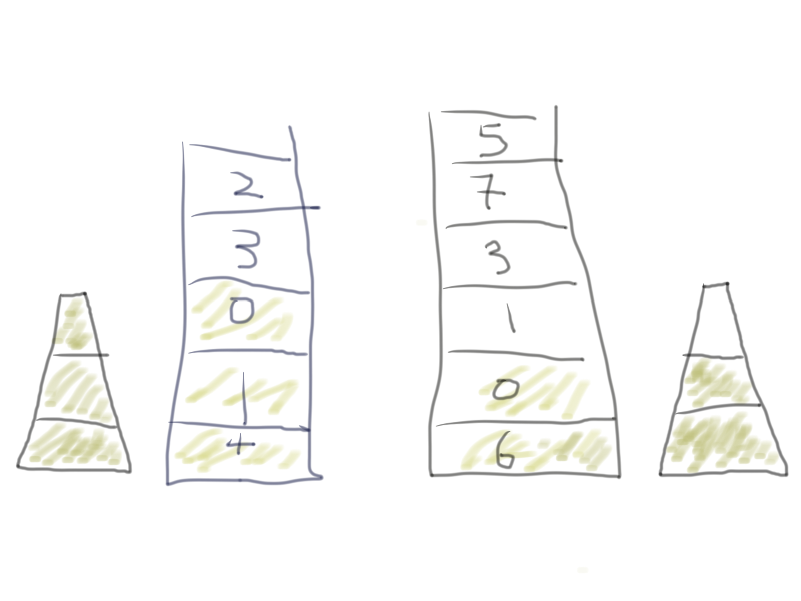

Get Minimum Value from Stack in constant time
1. Use Two Stacks
One stack stores values which have been push.
Other stack storethe values in increasing order.
2. Push implementation:
When a value is push, check whether the value is greater or
equal the current top value in the maximum Stack
If the value is greater or equal the top value in the maximu Stack
then
push the value to "normal Stack" and "top Stack"
else
Just push the value to "normal Stack"
3. Pop Implementation:
If the top value of "normal Stack" is equal to the top value of "top Stack"
then
pop both values from "normal Stack" and "top Stack"
else
Just pop the value from "normal Stack"
template < class T>
class StackMin{
public:
stack st;
stack minstack;
StackMin(){
}
public:
T getMin(){
if(minstack.size() > 0)
return minstack.top();
return -1;
}
void push(T n){
if(minstack.size() == 0)
minstack.push(n);
else{
if(n < minstack.top()){
minstack.push(n);
}
}
st.push(n);
}
T pop(){
if(st.size() > 0){
if(minstack.top() == st.top()){
minstack.pop();
T n = st.top();
st.pop();
return n;
}
else{
int n = st.top();
st.pop();
return n;
}
}
return -1;
}
};
